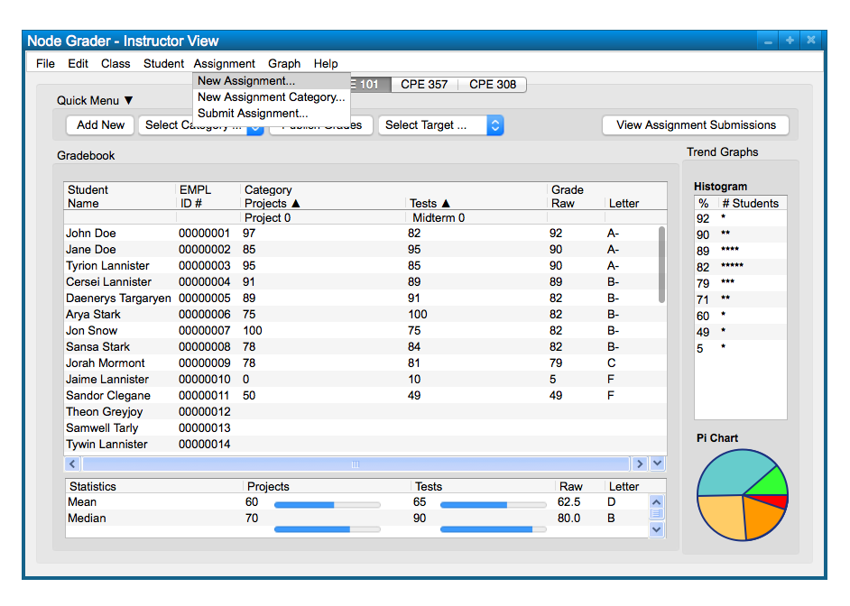
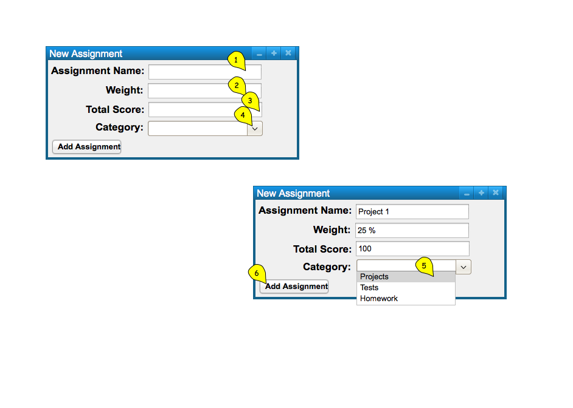
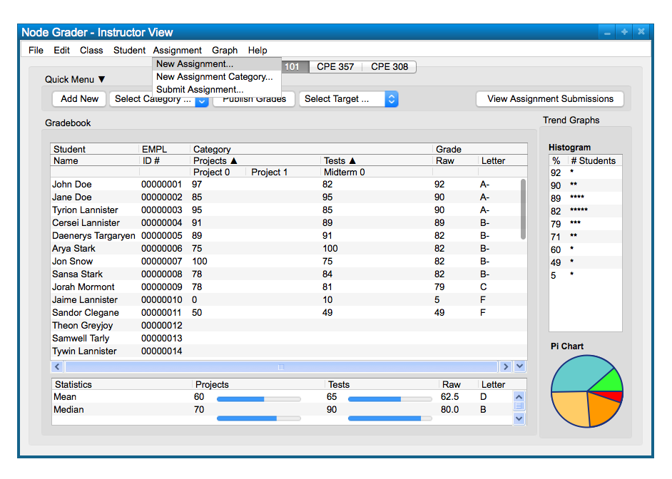
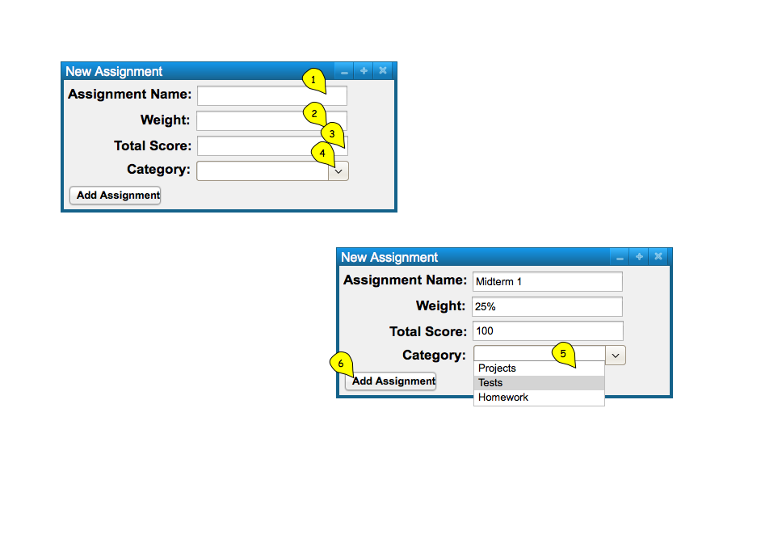
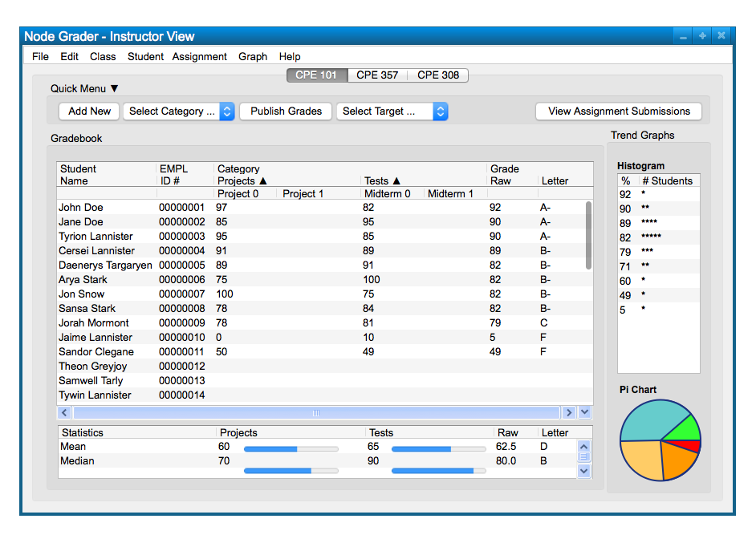

To create a new assignment, the user chooses the 'Assignment' menu
command. The user chooses
'New Assignment' from the list of items to add a new assignment; this will take
the form of the following, Figure 1.

Figure 1: Add Assignment path.

Figure 2: Add Assignment dialog.
The figure shows a dialog box for adding a new assignment. The dialog box only takes in a name in a text box, and an input box for the categories it goes into. It can be confirmed with the 'Add Assignment' button below. Confirming the assignment will create a new assignment in the spreadsheet.
When the user selects the 'Add Assignment' button, the system
inputs the newly created Assignment in Figure 3.
Figure 3: Assignment Added view.
To create another assignment, the user chooses the 'Assignment' menu
command again. The user chooses
'New Assignment' from the list of items to add a new assignment; this will take
the form of the following, Figure 4.

Figure 4: Add Assignment path.

Figure 5: Add Assignment dialog.
The figure shows a dialog box for adding a new assignment. The dialog box only takes in a name in a text box, and an input box for the categories it goes into. It can be confirmed with the 'Add Assignment' button below. Confirming the assignment will create a new assignment in the spreadsheet.
When the user selects the 'Add Assignment' button, the system
inputs the newly created Assignment in Figure 6.

Figure 6: Assignment Added view.